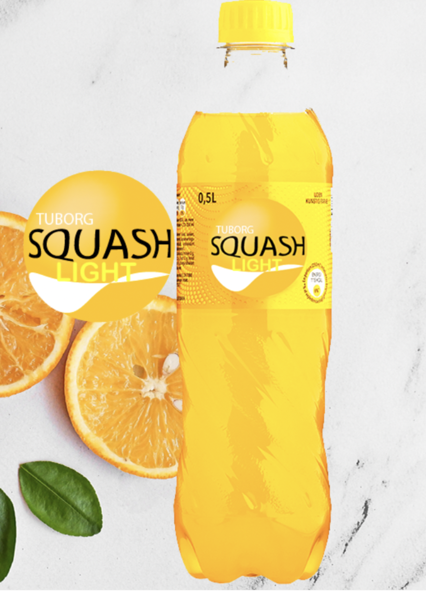

Tuborg Squash Light
Produkttype:
Læskedrik
Alkoholprocent:
0%
Fra:
1936
Tuborg Squash Light
Tuborg Squash Light har fået nyt logo men har den samme forfriskende smag af appelsin. En ægte klassiker som blev introduceret tilbage i 1936.
Tuborg Squash Light smager som en god dansk appelsinvand skal smage. Godt støttet af humoristiske reklamer er Tuborg Squash blevet et charmerende folkeeje – på tværs af generationer.
Ingredienser
Vand, appelsinsaft fra koncentrat (5,8%), kuldioxid, syre (E330), sødestoffer(E951, E950) konserveringsmiddel (E202), appelsinolier, gulerodssaft, antioxidant (E300)), stabilisator (E410). Indeholder en phenylalaninkilde.
Næringsindhold per 100 ml
| Kalorier |
4 kcal |
| Energi |
15 KJ |
| Fedt |
0 g |
| Heraf mættede fedtsyrer |
0 g |
| Kulhydrat |
0,9 g |
| heraf sukkerarter |
0,7 g |
| Protein |
0 g |
| Salt |
0 g |